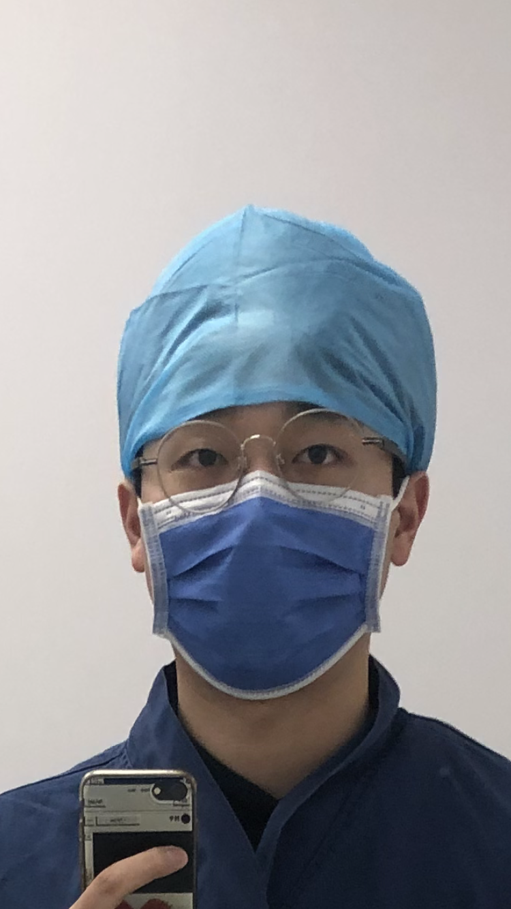
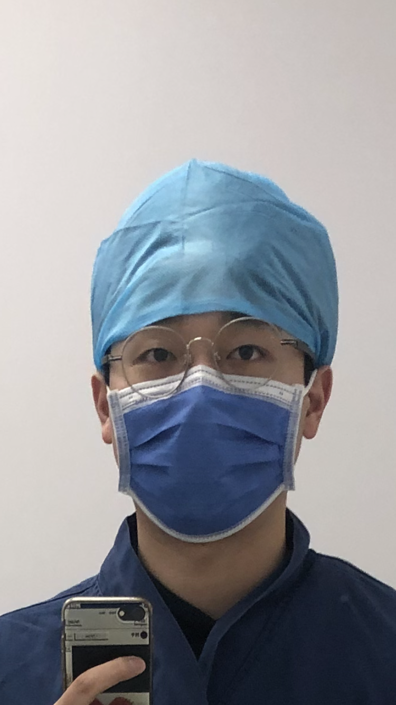
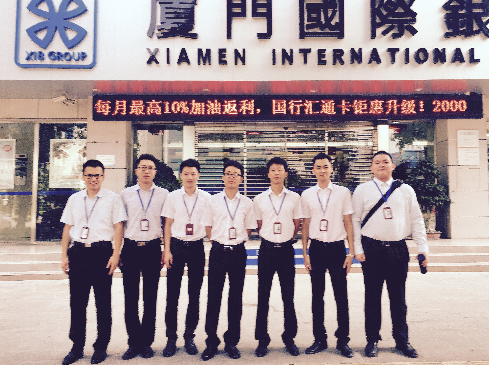

Professional Experience
Xiamen Cardiovascular Hospital, Xiamen University
Fujian, China | 2017 – 2023
Algorithmic Design & Systems Architecture- Conceptualized and designed predictive algorithms for medical consumable procurement and inventory optimization within the HRP system.
- Led system architecture design linking six heterogeneous hospital information systems through unified UDI interfaces.
- Collaborated with software engineers to implement algorithmic workflows and decision-support modules.
- Served as technical bridge between clinicians and developers.
- Led technical investigations into device-related adverse events (stent deformation, balloon failure).
- Conducted structured failure mode analysis and collaborated with manufacturers for design feedback.
- Developed a data-driven reporting and tracking workflow standardized across departments.
 

Xiamen International Bank, Corp. LTD
Fujian Province, China | 07.2016 – 05.2017
- Completed intensive training focusing on quantitative risk analysis, gaining practical experience with complex data flows and structured decision-making.
